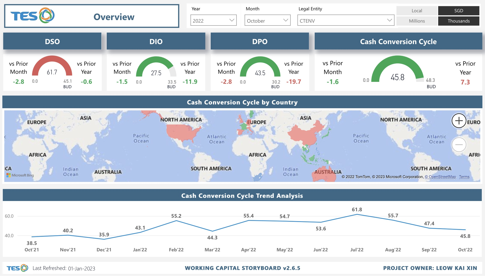
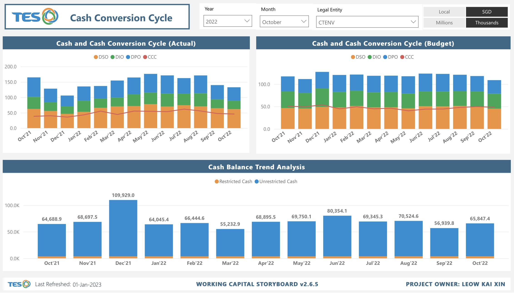

Working Capital Details
The Working Capital Storyboard displays the amount of available capital that the organisation can readily use for day-to-day operations. With this storyboards, it helps the user to
evaluate the efficiency of the organisation's operation and management as it measures the organization’s liquidity, operational efficiency, and short-term financial health. The
Storyboard consists of 4 dashboards:
1. Overview
2. AR by Age
3. AP by Age
4. Cash Conversion Cycle
The first dashboard is the "Overview" Dashboard. The dashboard shows the different components that make up the number of Cash Conversion Cycle (CCC) days. In doing so, users will be able to identify the increase or decrease in CCC and to find out the cause of its change in that period - whether the change is a result of a sharp change in any of the DSO, DIO or DPO.
The second dashboard shows the amount the customer owes the oganisation. At first glance, users will be able to identify which age bucket takes up the largest proportion in each month as well as the movement in each bucket. Users will then be able to identify customers who are more likely to default on their payment and respond timely to minimise such situations from occuring.
The third dashboard shows the total amount the organisation owes its creditors, as well as the number of days the organisation takes to repay them.
The last dashboard
